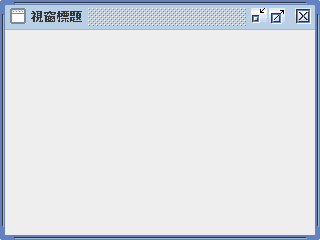
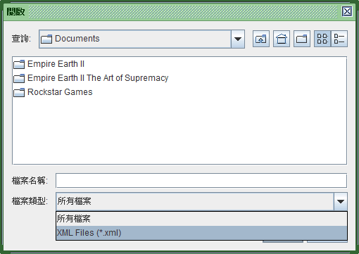
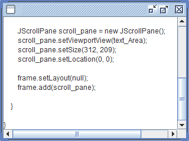
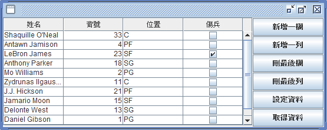

程式語言有分簡約語言和魔幻語言，而 Java 就是簡約的物件導向程式語言。
在 1990 年代，比 C++ 容易入門物件導向程式設計的 Java，令人喜愛的程度，就跟現在的 Python 一樣～
當時我們的想法是：「用 Java 學物件導向程式設計，再適合不過。」興起一股大家來學物件導向程式語言的風氣。
然而，現在 Java 跟 Python、Go、.NET Core 相比，只剩伺服端系統在用，沒人願意用 Java 寫應用端程式，讓我對自己的 Java 教學起了改版的念頭：「與其用現代的 Java 跟 Python 和 Go 拚搏卻是在誤人子弟，不如用傳統的 Java 教怎麼入門物件導向程式設計。」
原《爪哇即溶咖啡》改版為《用 Java 入門物件導向程式設計》，重點變成「物件導向」，而不是「Java 程式設計」。
因此我把 Java 8 以後的內容刪除，改為 Java 7 之前的純物件導向，所以本文就 Java 程式設計來說是過時的：「你無法從本文學到正確的 Java 語言。」
但對研究物件導向程式設計來說，用復古的 Java 7 寫法，概念會更清晰、觀念會更清楚！雖然我這麼做弊大於利，但我還是覺得不得不做這樣錯謬的事，《用 Java 入門物件導向程式設計》是和《用 Pascal 傳承程式》同系列的單元，而不是和《用 C# 堆砌程式》《用 Python 快寫程式》《用 PHP 網住程式》同系列。
總之，請不要用本資料學 Java 程式設計：「我還把三分之二對了解物件導向沒幫助的 API 範例砍光，你根本學不到什麼。」本文是用 Java 來入門物件導向的！範例精簡到只剩三分之一，反而方便你反覆練習寫 Java 程式，實際感受 Java 物件導向程式設計是怎麼回事～
從 C++ 到 Java 的物件導向程式設計
在 90 年代，C++ 是物件導向程式設計的首選，它的 class 語法簡單又直覺，軟體開發人員很容易用物件的概念組織程式。但 C++ 相容 C 語言，因此很多人在使用物件導向程式設計的同時，摻雜了程序導向的程式設計，久而久之破壞了物件導向程式設計的穩固性。
如果程式碼不能穩固地使用，就失去物件導向的核心利益了！這樣還不如繼續用 C 語言以程序導向寫好結構化程式設計，何必浪費將程式碼拆成一個個類別的時間？
隨著網際網路興起，能在不同作業系統執行的 Applet 成了程式設計的熱門話題，人們開始學習 Java 語言，並注意到它參考的是 C++ 語法，它將物件導向的部分發揚光大，然後剔除程序導向的部分，讓人們可以享受用 C++ 語法寫出優雅物件導向程式的樂趣，於是用 Java 語言學習物件導向程式設計成了第二個熱門話題！
事實上，在當時用 Java 寫應用程式並不是好主意，執行速度太慢。但學習 Java 程式設計卻是件很有意義的事，寫不好 C++ 物件導向程式設計的人，可以在 Java 學會如何正確使用物件導向語法。結果，網路上最流行的不是教你寫 Applet，而是教你學 Java 語言，展開了 Java 成為 2000 年代最受歡迎程式語言的序章～
類別（Class）
Java 規定所有程式都必須以類別來撰寫，所以即使只想宣告一個整數型態的變數，也必須這麼寫：
將類別建立成物件，並存取變數的方式如下：
main() 是 Java 內定的函式，Java 虛擬機器只要看到這個名稱的函式，就會自動執行裡面的程式碼。static 表示不用建立物件也能使用，也就是說不用 new 一個 A 物件就能呼叫 main()。main() 一定要宣告為 public 表示公開使用，否則 Java 虛擬主機會找不到它。
Java 跟 C++ 一樣，將類別變數和函式稱為成員（member），但 C++ 將類別裡面的變數和函式稱為成員變數和成員函式，Java 改稱欄位（field）和方法（method）。
物件導向將呼叫物件的函式，稱為傳遞訊息（message passing）。程式只透過物件之間的訊息傳遞，來組織軟體，就叫物件導向程式設計。1
Java 的類別也引進了 C++ 的建構子、封裝、繼承、多型、覆載、多載、抽象…等物件導向基本功能，下面將逐一介紹。
建構子（Constructor）
跟 C++ 一樣，名稱與類別一樣，且沒有傳回值，就是建構子：
如果有傳回值，像是 int、String、void，則是函式，而不是建構子。
建構子可以有參數，藉由參數的不同，來為類別設計多個建構子。
沒有建構子的話，Java 會自動建立一個呼叫 super() 函式的建構子。已經有建構子的話，就沒有自動呼叫 super() 的建構子，所以需要執行父類別的建構子時要記得要自己呼叫。
Java 虛擬機器有一套垃圾收集系統，會自動將浪費記憶體資源的物件釋放掉，所以不需要解構子（destructor）。雖然 Java 有 finalize() 函式，但這並不是解構子，而是垃圾收集決定回收該物件時自動執行的函式。
封裝（Encapsulation）
Java 引進了 C++ 的 public、private、protected，用來規劃類別的成員是公開存取還是限制存取：
變數 i 使用 private 表示只有自己能存取，函式 inc 使用 public 表示別的物件也能使用。
比較特別的是，Java 規定類別使用 public 的話，存放該類別的檔案，檔名必須與類別名稱一樣。
protected 表示開放給子類別存取。
不使用存取權限的話，表示同套件的類別彼此間都能存取。雖然 Java 預設使用這種存取權限，但建議物件導向新手明確宣告 public 和 private，否則你會覺得整個設計一團亂、在組織程式元件的規劃上失去控制權。只有物件導向專家，才懂得用預設的存取權限，將物件用群組化的方式來設計，平常人會一團糟。
繼承（Inheritance）
Java 使用 extends 指令來繼承類別：
沒有使用 extends 時，Java 會自動繼承 java.lang.Object 物件。
在 C++ 使用多重繼承時，常常產生成員歸屬問題，所以 Java 只能繼承一個類別。Java 使用多重實作介面（interface）的方式，來表達多重繼承的關係。介面只宣告函式名稱，不實作函式功能，所以沒有責任歸屬的問題，一律由實作的類別負責。
多型（Polymorphism）
Java 跟 C++ 一樣，透過繼承讓不同子類別有共同的行為能力，再藉由子類別覆寫（override）父類別的函式，來實現多型的程式設計。
不一樣的是，Java 預設所有方法都是 virtual，所以子類別的方法只要同名、同參數，就能覆寫父類別的方法，這也是 Java 之所以稱為簡約語言的主要原因：
或許，不是每個用過 C++ 的人都了解多型的意義，所以這裡還是補充一下觀念。
多型就是以同樣的訊息來表達不同的內容，或者以同樣的行為來進行不同的動作。舉個例子，你可以反覆用「你叫什麼名字」這行為向不同人發問，然後每個人會反應自己的狀況。
這項語法特性是物件導向程式設計與程序導向程式設計差異最大的地方，以往只能事先寫死程式碼來執行各種動作，有了多型會將程式碼設計成可擴充的元件，事後想要什麼再新增一個元件去用，靈活很多。
多載（Overload）
在 C++，類別的成員函式有個很棒的功能，就是函式名稱可以重複，只要參數不同，就可以視為不同函式。Java 也支援這項功能，讓物件導向程式設計更能表達語意：
其它特性
除了上述對 C++ 語法的改進，Java 也對物件導向程式設計做了重大改進！
像是廢除指標運算能力的參照（reference）、不用再寫解構式的垃圾回收（garbage collection）、介面與實作分離的 abstract 和 interface、用例外機制（Exception）取代函式傳回判斷值…這些影響物件導向發展的特性，都是 Java 帶頭發動的！
加上 Java 包山包海的程式庫（Java API）、編譯出來的檔案能直接在不同作業系統執行、沙盒般的安全性2，Java 是技術進步又有開發效率的程式設計方案！
事過境遷，從對比 C++ 的 1990 年代，來到對比 Python 的 2010 年代，Java 已不再是時時提出新觀念的領先者，反而成了處處引用其他語言功能的跟隨者，而且語法實現起來，不是用起來很彆扭，就是寫起來很醜陋。反觀比 Java 更早就朝多範式程式語言（Multi-paradigm）轉型的 C#，用起來就很順手、寫起來也很漂亮。在 Python 和 C# 雙面夾擊下，Java 不再是值得推薦給新手的程式語言，而是維護老項目3 用的舊技術～
是抽象還是想像？
不要把現實世界的物體，搬到物件導向的程式裡。
想像
坦白說，物件導向程式設計的開發手法，其實還是跟程序導向一樣，可以重複利用的，就加以模組化，只是從函式改成類別來模組化你的程式，能夠更靈活管理一大群模組罷了！
亦即，物件導向絕對不是用來對照現實世界的開發手法！
學過「封裝」「繼承」「多型」依然不知道物件導向程式設計是怎樣的開發手法，就是因為想把現實世界搬到程式設計；但那不叫「抽象」，而叫「想像」。下場通常是過兩三年了，還無法建立起能夠彰顯物件導向精神的開發手法。
要建立讓自己感覺到漂亮的物件導向開發手法，應該回過頭來讓程式設計去像現實世界，這樣才叫「抽象」。或者說，你應該抽象的對象是依然是「程式」本身，而不是「現實世界的物體」，錯這一步就全盤通輸。
在傳統程式設計裡，根據程式的需求，分割出函式來使用，這就是一種針對程式本身所進行的抽象了！現在你只需要把函式改用類別來設計，就能在往後修改程式時，發現到程式具備的穩固性，不會因為大量修改而破壞系統的運作。千萬不要以為把現實事物寫在程式世界裡面叫做抽象！
所以「物件導向程式設計」並不複雜，只是一種能夠更靈活管理模組的程式語言而已，是牽扯上「物件導向專案管理」的手法才導致「物件導向」變成像玄學一樣詭譎的議題。因此，當你在初學「物件導向」感到迷惘時，請跳脫「物件導向分析」「物件導向設計」，剩下「物件導向編程」就好，單純地從程式設計的觀點，來理解物件導向的基本精神，會比較有效率。
但並不是拋棄「物件導向分析」「物件導向設計」，而是原本正常的學習過程，就應該從「程式設計」本身建立起物件導向的開發手法，然後為了「明文規範」這樣的開發手法，才將這些擴展為「物件導向分析」「物件導向設計」。1
抽象
在破除了把「想像」當「抽象」的魔障後，接著進一步來描述抽象的手法。
讓某個可以獨立運作的程式區段，變得像某個「對象」可以與它溝通交流，然後協力運作，這就是 object 了！
object 這一詞所表示的「物件」，是可以與你「相對立」的東西，而不是與你「相對等」的存在。
把程式碼變成與你相對立的東西，讓你可以對它進行操作，就是物件導向程式設計的精隨。讓某個程式區段變成可以穩固操作，而且沒有副作用，是很快樂的事！這件事就像從化學排列組織中調配出新的藥方，可以有效治療某個症狀，但身體卻沒有副作用一樣，設計物件導向程式的時候，都會感受到這樣的快樂2。
如果你企圖把整個世界搬到程式裡面，成為各個相對等的存在，那叫 things，而不是 object。把明明不真實存在的事情搬到程式裡面，然後說服自己說：「這些是物件。」你發揮的是想像，並不是抽象。把確實存在的程式碼，設計成相對立的東西，讓你可以更穩固、有效地重複使用它，才是物件導向真正所要的抽象精神。
為何會把物件導向拿來對照真實世界的物件？
「把現實世界搬到程式設計」的物件導向觀念，容易讓你誤入歧途，但為何大多數人正在這麼做？
為了物件而物件，或多或少在兌現獨立個體的設計～
物件導向程式設計語言並不是讓你把 Ball（球）、Court（球場）、Stand（球架）、Player（球員）、Rule（規則）、Score（計分）鉅細靡遺搬到程式裡面，企圖堆砌出一個想像世界的技術。但當你這麼做時，卻相當貼近物件導向程式設計的精神了：「每個物體都保持獨立性，球是球、場地是場地，球不必關心場地座落在哪或造價多少來製造，場地也不必關心球是哪個品牌或哪種顏色來設計。」
所以，你並不是不能建立 Ball、Stand、Player、Score…這些類別，只是我們並非為了把所有真實世界存在的物體，通通搬進程式碼裡面，讓我們的程式世界應有盡有，而建立出這些類別。我們是為了方便整理「可獨立運作的程式碼」才建立這些類別，讓外界只能接觸該個體公諸於世的功能特性使用它，讓它始終就是那樣的個體，不會時常因外界的需求條件變成另一種個體。
因此，不要為了物件而物件似的，瘋狂比照現實世界的事物，建立一堆類別。而是要讓不同個體能獨立於外物，讓某塊程式碼照自己需求條件發展，不受外界影響往後的設計，而寫成類別來管理。否則，即使你把所有事物都搬進程式碼裡面，卻彼此牽扯不清：「球會挑南北場地、場地會挑球的顏色。」那你的物件導向程式設計不管怎麼寫，永遠都不會有成熟的一天～
做為最高道德標準，不要陷入迷思。
以籃球來講，有室內球跟室外球的設計之分，這就是在挑場地了！
這時，我們繼續堅持保有類別不受外界影響的獨立性，不讓該類別被修改設計，以免時常演變成另一種不一樣的類別。只要費心思考，依然能夠不破壞程式碼獨立性，最小限度地「附加」公諸於世的新功能特性上去，而不是破壞設計。
但也不要陷入迷思，以為類別應該完全禁止受外界影響，我們的目標是：「以免『時常』演變成另一種不一樣的類別」，並不是『絕對』不能。
如果真的該設計一顆「拿到戶外打就會爆掉的室內籃球」，那就放手去設計這顆可以當炸彈的籃球吧 XDDD
不要違反 Java 的物件導向思維
因為 Java 不是純正的物件導向程式語言，而是一款規範說應該怎樣使用物件導向程式設計的語言，所以不要違背 Java 制定的規則。
Java 並不適合做為「學術派物件導向程式設計」的語言
你可能會想藉由 Java 來建立一套自己的物件導向思維，但真的不建議幹這種事，你會發現很多事都不能做。像是鉅細靡遺 import 所有用到的套件（甚至連 lang 都寫進來）、全面使用 this 叫用自身屬性與方法、不宣告 reference（參照）直接 new 一個 object（物件）…我知道這麼做一定有自己的想法，但在 Java 幹這些事，吃虧的份要比佔便宜來得大。
因為 Java 並非完整的物件導向程式語言
Java 一向自稱是完全物件導向的程式語言，而不是「完整的」物件導向程式語言。
這差異在於，Java 只是規定你必須用物件導向的結構來開發程式，因此使用 Java 語言設計出來的程式，確實是完全物件導向的結構。
不過，Java 卻把物件導向的做法給寫死，要求你照 Java 那一套物件導向思維來設計程式。而許多不在 Java 物件導向思維的語法功能，則不會納入 Java 語言。
於是 Java 語言確實是完全物件導向的程式設計，但卻是會讓你綁手綁腳的物件導向程式語言，因為它物件導向的機制不足，你心中思維的物件導向架構，有可能無法在 Java 程式語言建立起來，只能被迫改變自己真正想要的結構來通過 Java 認定的規範，因此稱不上是一款完整的物件導向程式語言
解決之道
若真要架構自己的物件導向規範，物件導向語法強大的 C++ 反而是比較適合的選擇。
但有時候我們不是為了開發軟體而在眾多語言中選擇 Java，而是為了跑 Java 所以試圖在上頭開發應用程式，沒得選擇。既然用 Java 程式語言，那與其建立自己的一套物件導向學術思維，不如遵循 Java 預設的物件導向學術思維～
那為何在物件導向的領域，Java 比 C++ 來得熱門？因為 C++ 的語法功能強悍到難以駕馭，剛上路的物件導向程式設計師，不曉得該怎樣整合得宜這群語法結構。反而規定你只能怎樣使用物件導向的 Java 是最好入門的選擇！
不盡然是缺點
雖然 Java 稱不上是完整的物件導向程式語言，但像這樣把物件導向的做法給規範成固定幾種範本，有個好處就是每個人寫出來的程式會變得類似，有助於團隊的開發。
Java 原本就不是自比 Perl 這類「There's more than one way to do it（不只一種做法來做一件事）」的萬能型程式語言，反而是希望做法減到最低，能在特定幾個領域提升開發效率的程式語言。
如何用 Java 語言進行物件導向程式設計？用物件導向保存你的程式設計結果！
這裡要教你的，不是軟體工程學的物件導向，而是在物件導向正式納入軟體工程前，物件導向程式設計是怎麼回事？怎樣叫做 Java 物件導向程式設計？因為，軟體工程把物件導向複雜化，如果一開始就從物件導向分析、設計、編程的角度切入物件導向程式設計，會讓初學者無所適從，學不起來。讓我們把問題簡單化，而不是複雜化！不提軟體工程學的話，物件導向程式設計是很簡單的。
總之，來看看用 Java 語言進行物件導向程式設計，寫程式的過程大概是怎樣吧？
首先，當 Java 的 API 沒有直接提供我們想要的功能時，就必須自己間接寫出來。最常見的，就是要刪除資料夾的話，必須裡面沒有東西。如果資料夾裡面有檔案的話，必須自己寫程式刪除。幾經折騰，總算寫出一個能完成工作的 deleteDirectory() 函式。
下次在其他程式案子要再用到這個功能的話，常見的做法是把 deleteDirectory() 函式整段程式碼複製貼上。但是在物件導向程式語言，可以設計成一個 class 保存在 Directory.java 裡面，跟其他 *.java 放在一起，這樣只要複製檔案就能使用這段程式碼。
既然寫成 *.java 然後四處複製貼上這些檔案，那還可以進一步編譯成 *.class，然後指向 CLASSPATH，讓你這個類別就像 Java API 一樣，所有程式碼都能共用這個功能。這就是 Java 更勝傳統程式設計的物件導向機制！不只是從原始碼的層次加以整理，而是能事先編譯好，成為一個元件，把程式功能元件化，再用功能元件打造你下一個程式專案。Java 能讓你的程式專案，不再全都是由原始碼組合，而是用已編譯好的程式去組合成更大的程式。這對大型開發很有幫助，你只需要面對少量的核心原始碼，更容易去理解與維護它，已編譯好的元件就當它是 API，再龐大都無所謂，反正只管去用它就好，不用連帶去理解與維護它～
你要盡量把工作結果，寫成類別，然後編譯成 *.class 來用，而不是複製貼上 deleteDirectory() 函式或 Directory.java 檔案。逐年累積工作結果下來，就會有能讓你比別人更快完成工作的程式寶庫，你自己的獨家 API～
所以，當你疑惑該如何用 Java 語言進行物件導向程式設計？或者說怎樣才叫 Java 物件導向程式設計？答案就是用 Java 的物件導向機制，保存你的程式設計結果，就這麼簡單！這麼做，就能受用物件導向帶來的益處，比物件導向分析、設計、編程受用多了。
如何寫出好的程式？什麼是好的設計？
好的程式，不是寫來彰顯技術，而是讓沒技術的人也讀得懂～
漸漸熟悉程式設計以後，首先，最容易發生的，就是質疑自己寫的程式不夠水準，然後開始思考，該怎樣寫出好的程式？
而思考的方向往往是，怎樣寫才能讓自己顯得高竿一些？不希望寫出來的程式碼，讓人家看了以後，認為你像初學者般笨拙。
於是可能傾向於這樣寫程式：
然而，這種純粹只是節省行數或者字數，對執行效能沒有實際提升的寫法，並不叫做好的程式。1
真正好的程式，是寧可多花幾行程式，讓閱讀你程式碼的人，能輕鬆自在地理解你想要傳達的想法：
所以，別再為「怎樣寫才叫好的程式」這種問題感到疑惑，最笨拙的寫法，往往就是最好的程式。
自認為高竿的程式碼，但沒人明白是在做什麼事，其實是最差勁的程式！能故意用最笨拙的方式，寫出連小朋友看了以後，都大概知道是在做什麼的程式碼，才是好程式。2
除了好的程式，還要有好的設計。
那麼，把上面的範例，寫得像下面載明得更仔細呢？
這是好是壞，還真的見仁見智…
上一節範例
來看兩個範例的差異，上一節認為好的範例，只是將艱澀的計算結果保存在變數裡面，好賦予一個名稱，讓我們能夠辨識這是怎樣一筆資料，然後剩下的部分保持不變。
因為 newInstance().newDocumentBuilder().parse(xmlfile) 各個串接的 method，從字義上已經很明顯表達出是建立 DocumentBuilderFactory 與 DocumentBuilder，所以就不進一步為這些操作取名為 factory 和 builder。
API 公開的操作介面會說話，這是相當重要的關鍵，懂得這招對你的設計會有幫助！
至於 document 則是只用到一次，另外開設變數來命名的話，反而讓 element 的存在失焦，所以上一節認為好的範例選擇省略，如果會用到第二次的話再說。
從語意上來看，上一節範例其實更有表達力，基本上「我個人認為」它是比較好的風格。
這一節範例
但並不能說這一節範例做過頭，因為就設計上來看，它是為了日後的修改，所刻意讓出修改空間的風格。
上一節認為好的範例常見於中國人，這一節的範例常見於台灣人。而我們常常聽到業界認為中國的程式設計師開發能力很強，但屬於個人戰力，所以讚賞台灣的程式開發人員比較懂設計，適合團隊工作，差別就在這裡。3
業界偏好事先就能周到地保留修改空間的程式風格，更勝於直覺、有效傳達語意的寫作風格。
能寫出好的程式，不一定就能產生好的設計！好的程式，必須易於閱讀，而好的設計，必須易於修改。然而，易於閱讀的程式雖然對易於修改很有幫助，但那只是其中一環而已，易於修改的好設計並不是光靠可讀性就能達成。甚至為了易於修改，像是大量使用物件導向設計模式的話，反而可讀性會降低。所以好的程式跟好的設計其實是不一樣的議題，我們必須另外努力去做，才能達成！
Java 不再免費？
JDK 11 和 JDK 8
官方下載的 JDK 已經不是免費使用，變成商用授權軟體
JDK 11 和 JDK 8 Update 211 開始，全面使用 OTN 授權協議（Oracle Technology Network License Agreement），取代舊的 BCL 授權協議（Oracle Binary Code License Agreement），Oracle JDK 確定不再免費，屬於向官方取得授權然後商業使用的軟體。
但純粹只是 Oracle 自己的 JDK 不再免費，並非 Java 不再免費！Oracle 已為一般免費使用者鋪好 OpenJDK 的路，只要改用 OpenJDK，依然跟之前一樣，可以免費使用 Java 技術開發應用程式、商轉企業系統。為此 Oracle 還釋出許多 Java 的專利給 OpenJDK，讓兩者在技術上保持一致。
這裡有個坑，Oracle JDK 依然是免費下載的，但只能評估和測試用！若只在自己電腦使用，Oracle 會視為評估和測試用途，不會向你收錢。但只要是在有營運的公司內部使用 Oracle JDK 開發或執行 Java 程式，就要與 Oracle 洽談合約！所以請不要在工作上使用 Oracle JDK 開發程式，也不要在公司網站採用 Oracle JDK 運行程式～
換句話說，Oracle JDK 並不是過去的 Java SE Development Kit，而是 Oracle 另外自己用獨家專利打造的 JDK 產品，是給企業用的，而不是給大家下載使用的免費軟體資源。過去的 Java SE Development Kit，已遷移到 OpenJDK，繼續讓大家能下載並免費使用 Java！
但 Java 依然是可以免費使用的技術
其實還是跟以前一樣，Java 有免費使用和商業使用兩種！只是 Oracle 不再提供免費使用的版本，把免費使用的版本移交到 OpenJDK 而已。
所以嚴格來說，變的只有 Oracle 的業務，Java 程式語言可以免費使用的情況並沒有變！你依然可以像過去那樣免費使用 Java，只是要改用 OpenJDK，不要再從 Oracle 網站下載 JDK。
其實這樣的改變，反而更能保障免費使用 Java 的開發者和企業！過去 Oracle 提供付費和免費兩種 Java 時，想免費使用卻會誤入商業使用的陷阱，現在 Oracle 只提供付費的 Java，免費使用的 Java 由 OpenJDK 提供，付費版和免費版界線分明，使用者不用再擔心有哪些陷阱。
坦白說這招走得漂亮！一方面 Oracle 能用自己獨家技術的 JDK 從 Java 賺錢，實現 Oracle 一直想從 Java 開設業務來賺錢的心願，一方面又讓免費使用的 OpenJDK 更完善，讓想免費使用 Java 的人更方便往沒有付費陷阱的 OpenJDK 遷移～
Oracle JDK 17
免費送你三年商用許可
隨著新的 LTS 版 Java 問世，Oracle 使用 NFTC 授權協議（Oracle No-Fee Terms and Conditions），允許在期限內免費商用 Oracle JDK 17！
免費的期限是下一個 LTS 版本推出後滿一年截止，也就是三年。這段期間將 Oracle JDK 17 用於公司營運，不需要向 Oracle 商談合約付授權金，等於談妥三年合約了！
期限到了，Oracle JDK 17 將轉為 OTN 授權協議，必須付費，不再允許繼續免費商用 Oracle JDK 17！想繼續免費商用 Oracle JDK，方法就是升級到下一個使用 NFTC 的 LTS 版本。
但你要知道，Java 通常用於後端開發，同一版本用越久越好，最好不要升級，以免承擔不相容的風險！明明 Java 17 是 LTS，能持續更新到 2029 年，選擇 Oracle JDK 17 卻只能用到 2024 年，就得升級到 Oracle JDK 21 才能繼續商用，然後等到 2026 年又得升級到 Oracle JDK 25，這就失去 LTS 的意義了～
但 Oracle JDK 依然是商用授權軟體
僅 Oracle JDK 17 和往後的版本，適用新的 NFTC 授權協議！Oracle JDK 8 和 Oracle JDK 11 依然使用 OTN 授權協議，請勿貿然下載最新的 Oracle JDK 8 和 Oracle JDK 11 在商用上。
所以，並不能說 Oracle JDK 成為免費軟體，Oracle JDK 仍舊是商用授權軟體，只是 Oracle 免費提供兩三年的商用合約而已。
要免費商用 Java 技術，依然是 OpenJDK 才有保障，不建議轉換到法律關係複雜的 Oracle JDK！
想商用 Oracle JDK 的話，要有「換約」的觀念，當個知道怎麼守法律條文的人，積極了解與關心 Oracle 是否每一版或每一年都擬定不一樣的合約出來，及時遵照授權協議的變動去商用 Oracle JDK，以免誤觸法律陷阱。如果你不願關心法律和合約的事，請不要使用 Oracle JDK！以為就此免費，卻變成違法使用 Oracle JDK，反而付出慘痛的代價。
String
請把 String 視為進入 Java 程式設計的第一課，它比你所想的還要不簡單！
你應該對 String 的種種功能感到興奮、有趣，而不是覺得怎麼光一個 String 就這麼麻煩…否則勸你還是趁早放棄物件導向程式語言，因為可以操控物件的各式各樣功能來完成任務，是物件導向程式設計人員最基本的樂趣～
對學習物件導向程式設計來說，學習怎麼用 String，要比學習各式設計類別的花招來得重要！因為物件導向程式設計的重點，是用物件來設計程式，類別只是達成這目的的手段而已。
藉由這一章的 String 還有下一章的 StringBuilder，了解「操作物件」是怎麼回事，然後我們也設法把自己的程式，都設計成像 String 這樣的物件來用，我告訴你，這就是物件導向程式設計！1
比較字串內容
有三種，而且比較的原理不同，請務必釐清箇中差異，否則依賴比對字串來動作的程式將設計失敗：
從字串中尋找文字所在位置
找不到的話傳回 -1，因此這個功能也常常用來檢查字串中有沒有特定文字，例如：
if(a.indexOf("#")<0){
doSomething();
}
另外還有類似的 lastIndexOf() 可用，差別在於改從字串尾端往前尋找，但結果不變。
以 Regular Expression 比對資料
雖然 indexOf() 就可用來檢查字串中有沒有特定資料，但主要任務並非如此，所以可以選用真正專門用來執行這樣任務的 matches()，它可用 Regular Expression 語法來檢查資料。
底下範例用 Regular Expression 設定條件，檢查字串的資料是否符合 Hex 寫法的 RGB 值：
取得某個位置的字元
因為要指定第一個字元的話是 0，所以指定為 3 所獲得的字元為 D。
擷取字串
不是很直覺的參數，容易誤以為是第三個字元到第五個字元，但其實第二個參數是「終點」，並不是「從…到…」，要特別記住。
也可以不用第二個參數，這樣則是從指定的某個字元開始擷取往後的所有字串內容。
混搭 indexOf() 與 substring()
底下範例從 [password=abc123] 這組字串中2，擷取出 password 與 abc123。
分離字串
上面的程式可以簡化成：
這招尤其適合用來快速取得 CSV 格式中想要的資料！特別是以純文字文件的「行」為 row，以 split() 的陣列索引值為 column，一個「資料表」很簡單就實現了。
替換字串中的文字資料
值得注意的是，b 雖然是 HE--O，但 a 依然是 HELLO。
以 Regular Expression 一次替換多種條件
如果想替換掉的文字不只一個，又不想多寫一行程式來替換，可以使用 Regular Expression 做為條件。下面的範例，一行就將 HELLO 中的 L 和 O 全部替換為 - 符號：
連接字串
這個範例值得注意的是，b 雖然獲得連接了字串的內容，但 a 本身的資料並未改變。
轉換為大小寫
有時候需要檢查字串內容時，先全部轉為大寫或小寫，再來處理會比較適合。所以這個功能雖然只適用於英文字母，但還是用得到，尤其是設計登入介面，處理英文字母的帳號。
將數值轉為字串
如果想將兩個數值資料用 + 串起來成為文字，會變成兩個數值進行加法運算，而不是串接。這時就適合用 valueOf() 功能。
將物件型態的字串轉輸出為基本型態 char 的陣列
適合逐一針對字串裡面每個字元進行運算的場合。
字串的 Unicode 值
直接對字串資料操作物件功能
以 "" 括住的資料，本身就是 String 物件了，因此可以直接對其呼叫 Stirng 的功能：
StringBuilder、StringBuffer
由於 Java 的 String 為「內容不可變」的物件，當內容變更時，採取重新 new 一個物件做為新內容的做法，為了避免 new 太多 String，而提供內容可變的 StringBuilder。
既然 StringBuilder 是特別用來變更內容用的，因此有更豐富的文字修改能力，可以方便開發者編輯字串內容。但不支援 Regular Expression，因此不是用來取代 String 的，而是輔助用的，適合用在插入與刪除的場合。
最後，StringBuffer 其實與 StringBuilder 一樣，只差在支援多執行緒；如果設計上沒用到多執行緒，那使用 StringBuilder 有更佳的執行效能。
輸出字串
StringBuilder 並非 String，因此不能將它代入 String 的參數，必須使用 toString() 將內容以 String 輸出：
更改字元
注意！既然是字元，第二參數用的是單引號，而不是雙引號，否則將編譯錯誤。
更改字串
注意，與 String 的 replace() 參數用法不一樣。
刪除連續字串
注意！跟 String 的 substring() 一樣，參數看起來並不直覺，第二個參數是終點（到哪裡為止），所以 (1,6) 而不是從第二個字元刪到第七個字元。
清空字串
StringBuilder 並沒有 clear() 這類操作方式，只好用 setLength(0) 將字串長度設為 0，以資料歸零的做法來折衷：
格式化字串
Example 3
System.out.printf() 跑的其實就是 Formatter：
Regular Expression
雖然 Java 的 String 可以進行 Regular Expression（正規表示式），但正式的做法是使用 java.util.regex.Pattern，它需要混搭物件，所以稍嫌麻煩，但也因此賦予許多靈巧的機制，可以設計出較有彈性的程式結構。
取得成功匹配結果的開頭位置與終點
注意開頭位置是「第幾個字元開始」，但終點卻不是「第幾個字元結束」，而是「到哪裡為止」。
完整匹配
有時候希望更簡單就能以嚴密的方式，比對整個字串是否能通過驗證。如下範例，Pattern 所 matcher() 的字串，必須從頭到尾都符合 compile() 設定的條件，才會傳回 true：
底下示範無法通過規範：
切割字串
使用 Pattern 的 split() 可將字串依照 compile() 所建立的規則，切割為好幾段的字串，而切割出來字串，以 String 陣列傳回：
陣列、java.util.Arrays
陣列
陣列是程式設計語言都有的語法功能，用來連續建立同樣型態的資料。
建立陣列
空白陣列：
含初始值的陣列：
匿名陣列：
巡訪陣列
傳統做法：
Java SE 5 新增的語法 For-each loop：
java.util.Arrays
陣列本身不是物件，因此沒有足夠的功能可以操作。為了更進一步靈活使用陣列，Java 提供了 Arrays。
它更讓人驚豔的是採用高效率的演算法來執行工作，提升解決問題的能力！
代入陣列到資料群集
想要將陣列依序放入群集時，通常會寫如下的程式：
對於這樣的動作，Arrays 設計更高效率的演算法，寫法如下：
注意！使用 Arrays.asList() 取出的資料，必須改用 List.addAll() 一次存入。
擷取陣列、複製陣列
擷取完整長度的陣列，就變成複製陣列了。
擷取資料還有 copyOfRange(陣列, 起點, 終點) 可用。
搜尋資料
排序過的陣列，可以使用 binarySearch(陣列, 資料) 和 binarySearch(陣列, 起點, 終點, 資料) 搜尋資料，找到的話會傳回索引值。
Collections 速成
如果你懂得根據資料的處理方式，善用合適的 Collection，可以簡化程式碼的結構，提升可讀性。例如既要過濾重複資料、又要排序資料，那直接用 TreeSet 一次搞定，要比先用 HashSet 過濾，再轉存到 ArrayList 讓 java.util.Collections.sort() 排序來得乾淨俐落！
反過來，明明 Java 已經提供這些高效能演算法的資料結構，卻還自己土法煉鋼去處理，變成要敲二三十行的程式碼，錯失只需兩三行程式就能搞定的快感，而且處理時間可能要多兩三倍。
使用時機
陣列用途：
| ArrayList | 允許重複資料、照先後順序排列、適合讀取資料。 |
| LinkedList | 允許重複資料、照先後順序排列、適合更動資料。 |
| HashSet | 濾除重複資料、特殊演算順序。 |
| LinkedHashSet | 濾除重複資料、照先後順序排列。 |
| TreeSet | 濾除重複資料、自動排序。 |
關聯表用途：
| HashMap | 鍵/值對資料、特殊演算順序。 |
| LinkedHashMap | 鍵/值對資料、照先後順序排列。 |
| TreeMap | 鍵/值對資料、自動排序。 |
巡訪資料：
| Iterator | 使用 hasNext() 和 next() 巡訪資料。 |
舊版做法：
| Vector | 建議用 ArrayList 替代。 |
| Stack | 建議用 LinkedList 替代。 |
| Hashtable | 建議用 HashMap 替代。 |
| Enumeration | 建議用 Iterator 替代。 |
範例
先以 ArrayList 為例：
再以 TreeSet 為例：
補充
為什麼使用 List list=new ArrayList() 或 Set set=new HashSet() 的方式來宣告參照？這是為了往後隨時可以抽換成其它類別。當我們發現所選的群集在處理資料並不適任時，就可以由 ArrayList 抽換成 LinkedList、或由 HashSet 抽換成 LinkedHashSet，而不影響程式其它部分。
當然，還可以更進一步！如果希望將來可以在 List 與 Set 中替換，那可以改用 Collection 介面，因為它是 List 與 Set 的共通介面：
上例是用 HashSet 實作，現在直接換成 ArrayList，但其它地方都不需要修改：
然而，這樣做是需要犧牲的！例如 Collection 介面並沒有 List 介面的 get(int)，因此雖然可以從 Set 介面替換為 List 介面，但既然使用 Collection 介面，就不認得 get(int)，因此只能用 iterator() 來巡訪資料1。
這是理所當然的，既然要能隨時互相替換，那就應該用彼此都有的方式來操作。
如何在「初寫的方便性」與「修改的靈活性」之間做抉擇，端看我們對需求的掌握程度。
進階
java.util.Collections 提供許多 static 的 method，方便我們處理 Collection 的資料：
| binarySearch(List, Object) | 搜尋 List 內容的 Object 元素。 |
| copy(List dest, List src) | 複製 src 的元素給 dest。 |
| enumerarion(Collection) | 傳回舊式的 Enumerarion 迭代器。 |
| fill(List, Object) | 將 List 內容填滿為 Object。 |
| max(Collection) | 傳回 Collection 中最大的元素。 |
| min(Collection) | 傳回 Collection 中最小的元素。 |
| reverse(List) | 顛倒 List 內容的排列順序。 |
| shuffle(List) | 亂排 List 的內容。 |
| sort(List) | 排序 List 的內容。 |
| swap(List, int i, int j) | 交換 List 中 i 與 j 位置兩筆元素。 |
簡單示範其中的 shuffle，設計用電腦抽籤來決定聯盟球隊選秀順位的程式：
每次執行結果都不一樣：
補充
用來處理陣列的 java.util.Arrays，對 Collections 也有幫助，底下是利用 Arrays 產生 List 的範例，程式相當簡潔：
如果可以再寫成 List<String> list = {"AAA","BBB","CCC"} 就好了，可惜 Java 不支援。
亂數
你可能會感到疑惑說，預設的計算結果並不直覺，為何設定 3，並不是 0 到 3 或 1 到 3，偏偏是 0 到 2？
是不直覺沒錯，但這樣有個好處是，能直接處理「陣列」或「群集」的資料，因為這些結構在資料長度為 3 的時候，卻是從 0 到 2 去存取。可能設計 API 的人認為這種情況居多，所以預設這樣的值吧？
自己變通一下，把得到數值加 1，即為 1 到 3 之間的亂數了。
最小值到最大值的話：
new Random().nextInt(最大值-最小值)+最小值;
用起來跟 Math.round(Math.random()*(最大值-最小值))+最小值; 一樣，為什麼不提供 nextInt(最小值, 最大值) 把這細節裝在物件裡面？確實 java.util.Random 的設計不夠物件導向，但卻是不錯的反教材：「我們不該像 java.util.Random 這樣，設計一個其實重複的類別，我們應該設計進一步抽象掉細節層次的類別。」
資料夾與檔案的管理
其它常見功能
| canExecute() | 是否為可執行檔。 |
| canRead() | 是否可讀取。 |
| canWrite() | 是否可寫入。 |
| compareTo(File) | 合併檔案。 |
| getFreeSpace() | 取得所在磁碟的剩餘容量，單位是 byte。 |
| getName() | 取得檔案名稱。 |
| getParent() | 取得當前資料夾。 |
| getPath() | 取得完整路徑。 |
| getTotalSpace() | 取得所在磁碟的容量，單位是 byte。 |
| getUsableSpace() | 取得所在磁碟的可用容量，單位 byte。 |
| isDirectory() | 是否為資料夾。 |
| isFile() | 是否為檔案。 |
| isHidden() | 是否為隱藏檔。 |
| length() | 取得檔案大小，單位是 byte。 |
| listFiles() | 以 File 陣列傳回檔案。 |
| setExecutable(boolean) | 設定執行權限。 |
| setLastModified(long) | 設定檔案修改日期。 |
| setReadable(boolean) | 設定讀取權限。 |
| setReadOnly() | 設定唯讀。 |
| setWritable(boolean) | 設定寫入權限。 |
| toURL() | 以 java.net.URL 輸出。 |
純文字文件的寫入與讀取
檔案讀寫是 Java 最讓人津津樂道的物件導向經典案例！它有最基本功能的物件方便使用，事後用俗稱 decorator pattern（裝飾者模式）的設計，可以不斷堆加功能上去來滿足需求。
請在本章節好好看 Java 怎麼做，然後用同樣套路強化我們的類別！
直接套用作業系統預設格式來讀寫文字的 FileWriter 與 FileReader
為了方便程式設計師在不同作業系統，都能以相同的程式寫法，來存取純文字檔案的資料，Java 提供 FileWriter 與 FileReader，它會直接用作業系統預設的字元編碼與換行格式，來寫入與讀取純文字資料！
寫入純文字文件
注意！這個範例沒有建立空白新檔的動作，所以你必須事先準備好檔名為 sample.txt 的純文字文件，否則無法執行程式。
讀取純文字文件
如果讀取的 sample.txt 是前一個範例所產生，程式執行結果為：
提升檔案讀寫效率的 BufferedWriter 與 BufferedReader
使用 FileWriter 與 FileReader 是直接對硬碟的檔案進行讀寫，如果讀寫頻繁的話，因為硬碟往往是電腦中速度最慢的裝置，應用程式的效率可能會被拖慢。因此 Java 又另外提供了 BufferedWriter 與 BufferedReader，可以先將硬碟檔案的資料緩存在速度較快記憶體來讀寫，提高應用程式的執行效率！
不只如此，BufferedWriter 與 BufferedReader 提供了更容易使用的方式來讀寫文字，所以很少人直接用 FileWriter 和 FileReader，寧願多一道程序捆入 BufferedWriter 和 BufferedReader。
寫入純文字文件
注意！這個範例沒有建立空白新檔的動作，所以你必須事先準備好檔名為 sample.txt 的純文字文件，否則無法執行程式。
讀取純文字文件
如果讀取的 sample.txt 是前一個範例所產生，程式執行結果為：
使用 FileOutputStream 與 FileInputStream 指定字元編碼
常常聽到 FileWriter 和 FileReader 跨平台的說法！其實是「檔案讀寫」這個程式動作跨平台，而不是文字檔案本身跨平台。例如在預設使用 Big5 編碼的 Windows 寫入純文字文件，拿到預設使用 UTF-8 編碼的 Linux 碼讀取，還是會有亂碼的情況發生。所以我們應該掌握如何指定以某字元編碼來讀寫純文字文件的做法：
以二進制格式讀寫資料
DataInputStream、DataOutputStream
與「純文字文件」不同的是，「二進制檔案」無法用「記事本」或「文書軟體」開啟來閱讀，會看到一堆亂碼。有些人不希望保存資料的檔案能夠直接被閱讀與修改，或者希望提高檔案的資料處理效率而使用它，屬於進階應用的檔案保存手法。
寫入
將產生名為 data.dat、內容為二進制格式的檔案。
補充
除了 writeUTF() 和 readUTF()，還有更多像是 writeInt() 和 readInt() 之類的功能可操作。
FileInputStream 和 FileOutputStream 通常會用 java.io.BufferedInputStream() 和 java.io.BufferedOutputStream() 包起來，以提升執行效率。
RandomAccessFile
RandomAccessFile 能進行 DataInputStream 與 DataOutputStream 一樣的工作效果，但只需要建立一個物件～
Example 1
將產生名為 data.dat、內容為二進制格式的檔案，並輸出如下結果：
Example 2
將產生名為 data.dat、內容為二進制格式的檔案，並輸出如下結果：
使用 seek() 必須注意資料長度的問題，例如在 seek(0) 使用了 writeInt() 的話，因為整數是 byte[4] 長度，所以必須至少從 seek(4) 開始才行，否則等於從原先資料的中間插入新資料，把原先資料給破壞掉。
特別是 writeUTF()，長度不固定，文字越多就越長，這時 seek() 要保持足夠間距來應付才行！至於長度的計算，公式是「目前 seek() + 字數 + 2」，所以要取得本範例的 boolean 資料時 seek 為 4+3+2。
FileInputStream、FileOutputStream
前面範例是透過 Java 將資料以二進制格式寫入資料，往後再用 Java 讀出來用。但如果要讀取的，是像可執行檔、圖片、音樂、或其它程式產生的二進制檔案內容，那使用 FileInputStream 和 FileOutputStream 比較適合：
以二進制格式讀取檔案內容，再轉存為另一個檔案，這招等於複製檔案！
將 Java 物件轉為檔案形式
Java 能夠將程式執行中的「物件」，以檔案的形式儲存起來；這樣的過程術語叫「序列化」。當然，我們可將序列化的檔案還原為物件，善用序列化，可以讓我們寫出更優雅的物件導向程式設計，例如遊戲進度的存檔會更直覺、物件深層複製也能用這招來解決。
進階項目
如果物件某些狀態不想被序列化的話，可以加上 transient 指令：
用 Apache Commons IO 讓事情做起來更簡單
有時候借助第三方程式庫，要比一昧使用 Java API 來得好！像 Java 的檔案操作設計得很難用，別說刪除檔案遇到資料夾要自己寫迴圈逐一 delete()，誇張的是連複製檔案都沒有，要你用 FileInputStream 和 FileOutputStream 讀寫檔案。與其受鳥氣，不如下載 Apache Commons IO 取而代之：
更多物件與功能，請看 Apache Commons IO API。
用 Logger 取代 printStackTrace()
寫程式的階段，在 try.. catch.. 使用 printStackTrace() 對除錯很有幫助！但正式發布產品的話，卻不是好習慣，輸出的可是程式內部訊息，說不定會洩漏什麼不該被看到的東西～
應該使用 log 才對！底下是 Java 內建的 Logger 用法，它能輸出包含事發時間的訊息，並把結果保存為日誌檔案，請自行應用在 catch 裡面：
Logger 還有 warning() 和 severe()，可依嚴重程度和 info() 交替使用。
命令列介面的程式設計
應用程式（Application）一般分為「視窗軟體（Window）」的「圖型化使用者介面（GUI; Graphical User Interface）」，以及「主控台指令（Console）」的「命令列介面（CLI; Command Line Interface）」。本文將介紹如何用 Java 設計指令模式的程式～
輸入
底下示範 Java 如何取得使用者用鍵盤輸入的資料～
Example 1-1
第一個範例雖然不常用，但比較簡單，它用來取得使用者按下的是哪個鍵：
Example 1-2
第二個範例來看如何取得使用者輸入的文字，雖然它可用第三個範例的寫法來取代…
Example 1-3
第三個範例，將使用者輸入的資料分解成字串和整數等資料型態來使用，方便我們處理輸入的資料，避免寫一堆落落長的程式來擷取與轉換：
Scanner 還有更多轉換或取出資料的功能，請參考 Java API Specification。
Scanner 是 Java SE 5.0 開始支援的物件，它比過去的 java.io.StreamTokenizer 操作簡單、功能更強，而且不只可以引入 System.in，其實也可以引入 String 和 File。自從有了 Scanner，就很少人再用 StreamTokenizer 和 StringTokenizer 了～
不只如此，你可以發現這個範例比上一個範例簡潔多了！確實，自從有了 Scanner，也很少人再用 InputStreamReader 和 BufferedReader 來設計命令列介面程式的輸入功能了！
輸出
命令列模式的輸出很簡單，使用 System.out.print() 能直接將資料以字串輸出，System.out.println() 一樣，但會自動換行。System.out.format() 提供了格式化輸出的功能，但因為這是仿效 C 語言的 printf() 而來，所以又提供 System.out.printf() 來呼叫它：
Example 2-2
更多 printf() 格式化參數：
| %d | 輸出十進位整數 |
| %o | 輸出八進位整數 |
| %x | 輸出十六進位整數 |
| %f | 輸出十進位小數 |
| %g | 輸出科學標記法 |
| %a | 輸出十六進位指數 |
| %c | 輸出字元 |
| %s | 輸出字串 |
| %b | 輸出布林值 |
| %n | 換行 |
| %數字$ | 第幾個參數 |
| %數字 | 固定佔用寬度 |
| %.數字 | 設定小數點位數 |
Example 2-4
參數
在命令列下達程式指令時，經常都能尾隨一些參數，底下示範做法：
Example 3-1
Example 3-2
Example 3-3
暫停
可以使用 System.in.read() 暫停動作，等待使用者按確定再繼續。
調用作業系統的命令
如果你不知道怎麼播放 MP3 音樂，又懶得找套件研究怎麼寫一大串程式碼，那像這樣調用工具指令來完成，是湊合著用也不錯的取巧手法～
同樣的，在 Java 要複製檔案或刪除裡面有檔案的資料夾，程式碼寫起來也是非常囉唆！如果你確定自己用的 Java 應用軟體只會跑在 Windows，不需要跨平台，不妨調用 DOS 指令來完成：
這種做法之所以不鼓勵，就是外部程式出錯時，無法在 Java 抓蟲除錯。只有一兩個功能的小程式，用用很可以，但不要濫用，要懂得做取捨～
Swing 快速入門
你已經快速入門了～
依樣畫葫蘆，陸續加入像是：文字標籤的 JLabel、文字區域的 JTextArea、單行輸入欄的 JTextField、密碼輸入欄位 JPasswordField…等等各式組件，就能打造出視窗了！
接著再查 API 看看各個元件有哪些功能可用，然後深入研究 java.awt.event 的其它事件處理，就能熟悉 Java 的視窗應用程式設計！
系統原生元件樣式與純 Java 元件
Swing 預設使用 Java 自己產生出來的元件，好讓 GUI 跨平台時有更一致的表現！但視窗外框卻是作業系統原生，所以可以取消視窗外框，改用 Swing 的樣式：
顯示結果：

相反的，如果想讓元件使用作業系統原生元件的樣式，則是：
但只是「樣式」而已，並不是真的調用系統原生元件，無法藉以解決 Swing 耗用較多系統資源而顯示速度稍慢一些的問題。
如果需要作業系統原生元件的高反應速度、秒啟動的性能，可以用直接調用原生元件的 AWT。我們不見得有跨平台讓 GUI 保持一致的需求，且有時候只用到按鈕和輸入方塊等基本功能而已，這時 AWT 也是選擇，並非什麼都得 Swing 不可。
但 AWT 調用的是 Windows 95 那種原生元件，如果你想要的是 Windows XP、Windows Vista、Windows 10 視覺效果的元件，好讓應用程式外觀長得跟其他軟體一樣，那就是用 Swing 原生元件樣式，而不是 AWT。
對話視窗
訊息視窗
純粹跳出對話視窗顯示一下訊息，頂多搭配圖示方便使用者判斷訊息，有五種可用…
確認視窗
跳出詢問用的對話視窗，可根據傳回值，判斷使用者的回覆：
JOptionPane.YES_OPTION
JOptionPane.NO_OPTION
JOptionPane.CANCEL_OPTION
JOptionPane.OK_OPTION
JOptionPane.CLOSED_OPTION
依按鈕的配置，總共有四種…
補充範例
例如還蠻常用的情況是，用詢問視窗確認使用者是否真的要關閉：
檔案視窗
雖然有兩種方式可以呼叫不一樣的對話視窗，但其實只有標題列文字不一樣而已，取得檔案的行為一模一樣。為了方便研究，依然分開寫兩個範例如下：
指定預設路徑
你可以預設檔案對話視窗的一開始所在的資料夾位置，如下介紹的是使用者的桌面位置：
篩選副檔名
檔案對話視窗通常可以篩選副檔名，底下範例介紹如何為檔案對話視窗增加只篩選出 XML 副檔名的功能。

JScrollPane
捲動軸
底下示範為 JTextArea 添加捲動軸：
執行程式並貼上文字後：

其它設定
可用 scroll_pane.setHorizontalScrollBarPolicy() 設定垂直捲軸的顯示時機：
JScrollPane.HORIZONTAL_SCROLLBAR_ALWAYS （顯示）
JScrollPane.HORIZONTAL_SCROLLBAR_AS_NEEDED （自動）
JScrollPane.HORIZONTAL_SCROLLBAR_NEVER （隱藏）
可用 scroll_pane.setVerticalScrollBarPolicy() 設定水平捲軸的顯示時機：
JScrollPane.VERTICAL_SCROLLBAR_ALWAYS （顯示）
JScrollPane.VERTICAL_SCROLLBAR_AS_NEEDED （自動）
JScrollPane.VERTICAL_SCROLLBAR_NEVER （隱藏）
將元件做為 JScrollPane() 建構式參數的話，相當於 scroll_pane.setViewportView() 的功能，例如：JScrollPane scroll_pane = new JScrollPane(text_area)。
JTable
操作表格
針對上一節範例的 table_model 物件，進行「欄」「列」「資料」的相關操作。
讓表格能對應資料型別
表格可以根據資料型態的種類，作出不同的顯示：

文字向左對齊，數值向右對齊，布林值以核取方塊顯示。
先建立新的類別 MyTableModel.java 讓它繼承 DefaultTableModel，然後複寫 getColumnClass()，再將 Main.java 的 DefaultTableModel 改為 MyTableModel 即可。
日期與時間
java.util.* 裡的 Date 是個失敗的設計，它代表時戳並強制使用作業系統的時區且無法分割、通包所有處理時間的功能、精度不足…要說什麼是神類別，這就是最好的案例！
在 JDK 1.1 看到的解決辦法是，改推 Calendar 取代 Date 大部份的功能，然後把 Date 該被 Calendar 取代的功能整排 deprecated 掉。這做法不是取代整個類別，而是把 Date 功能割掉當成新類別（就跟 Calendar 一樣新而且是不一樣的東西），不是推出 Calendar 後形成新舊兩類別（也就不能當作 Date 一樣的舊東西），理念之複雜不是一般程式設計師能理解的。
但 Date 時區的問題還是沒有解決，後來 Java 8 推出新的 java.time.*，時戳、時區、時間各自獨立，且精度達到奈秒。
然而，練習舊的、設計不良的 Date，要比新的 Instant、LocalDateTime、ZoneId/ZoneOffset 更能了解 Java 物件導向程式設計。從 Date 的錯誤設計到 Calendar 和 DateFormat 的失敗套路，我們可以學到很多東西1，所以本文還是刊載舊的來練習…只是練習，正式場合請不要用舊的寫法處理日期和時間 XDDD
取得日期與時間
執行結果隨電腦當時的時間與時區而不同：
只想輸出日期的話，可用 DateFormat.getDateInstance().format(date)) 輸出「2002/8/29」，只想輸出時間的話，可用 DateFormat.getTimeInstance().format(date)) 輸出「下午 12:34:56」。
分別取得年、月、日、週、時、分、秒
執行結果隨電腦當時的時間與時區而不同：
有 SimpleDateFormat，想取得「年、月、日、週、時、分、秒」時，可別傻傻用 DateFormat 傳回的字串去剖析。
自訂日期與時間的輸出格式
執行結果隨電腦當時的時間與時區而不同：
指定時間
可以使用 getTime() 將 Date 轉為 long。許多 API 功能需要傳入時間當參數時，不是使用 Date，而是使用 1970 年 1 月 1 日起的毫秒數。
因為 Date 最早是設計來處理時間大小功能的工具箱，並不是時間專用的資料，所以早先的 API 不使用 Date 而是 long。後來閹割 Date 功能，才改為專門用來保存時間值的資料型態，結果 API 一下子用 long、一下子用 Date，導致不一致。
Java 給的這個歷史包袱，是我們在使用物件導向時很好的教訓！時時以 Date 當例子，能讓我們避免犯類似的錯誤，寫出更好的設計。
取代 Date 大部分功能的 Calendar
執行結果：
彆扭的是，Calendar 的一月是 0，所以取得月份時要加 1，設定月份時則用常數比較直覺。星期幾就複雜了，不同地區，有些星期日是每週的第一天，有些星期一是每週是第一天，導致台灣取得星期幾要減 1。
可以用 getTime() 傳回 Date，用 getTimeInMillis() 傳回 long。
有了 Calendar，Date 變成用來表示「時間點」，相當於一種時間專用的資料，而不是處理時間的工具箱。Date 和 Calendar 的關係，類似 Java 8 的 Instant 和 LocalDateTime。
暫停一段時間
在某些場合，sleep() 是很頻繁使用的功能，每次都寫在 try 裡很噁心，整串程式碼都寫在 try 裡又很愚蠢，所以在需要用到 sleep() 的場合，不妨丟出例外就好，不要處理例外。
或者另外寫個 sleep() 函式處理好例外：
void sleep(int x){
try{
Thread.sleep(x * 1000);
}
catch(Exception e){
e.printStackTrace();
}
}
往後都改用這個 sleep() 函式。
列印
列印的原理有點怪，但講起來也很簡單：「用畫的。」
我覺得這是很有意思、也很有意義的範例，練習用不一樣的視野來開拓我們的設計。
事前準備
除非你嫌墨匣太多，否則建議安裝 PDFCreator 充當印表機，在練習列印的功能時，將列印結果以 PDF 文件來儲存。或者 Windows Vista 開始內建的 Microsoft XPS Document Writer 也有同樣功能。
這樣在執行列印功能時，就不用拿真的印表機來測試，列印的結果改用 PDF 文件或 XPS 文件來輸出與顯示：
基本列印的語法架構
底下範例是最簡單的列印1，會在紙張上印出 Hello 字串：
改變文字樣式、取得紙張大小與可列印範圍
你可以透過 Graphics 改變文字的字型、大小、顏色，或其它樣式。而透過 PageFormat 的 getWidth()、getHeight()、getImageableWidth()、getImageableHeight()，可以取得紙張範圍的大小，避免資料列印到外界去了，例如：
自訂紙張格式
或者使用 PageFormat 透過 Paper 自訂紙張尺寸，如下範例，它加大了 A4 紙張的可列印範圍，否則雖然紙張夠大，但允許的可列印範圍不夠，列印時超出範圍的部分會被切割掉：
複製物件
如果你想要複製一份物件，Object 提供了 clone()，每個繼承自 Object 的 class 都能用它來複製自己。
不過，任意就能複製一份別人的物件來用，並不是很安全的設計，所以後來改成要使用 clone() 的話，必須宣告願意被複製的物件是 Cloneable 介面，並將 protected 的 clone() 覆寫為 public，而且還要拋出 CloneNotSupportedException 例外。
簡單的事變得這麼複雜，著實令人厭煩！但先別急，正好就是這樣的例子，可以見識 Java 如何藉由物件導向應對變化，學到很多東西～
Observer pattern
Java 內建設計模式中的 Observer，它用來監視物件狀態，當物件狀態改變時，它會通知監視該物件的對象，讓監視者可以做出反應；本範例中 View 物件將監視 Model 物件。
範例一：被監視者在狀態改變時發出通知，讓監視者做出反應。
範例二：取得被監視物件的狀態
Main.java
javac
常用參數
| -d | 指定編譯出來的類別，要存放在哪個資料夾。 |
| -classpath | 指定類別或掛載第三方套件到 CLASSPATH 環境變數。 |
| -encoding | 指定原始碼的字元編碼系統。 |
進階參數
| -source | 以哪一版的 Java 語法來編譯原始碼。 |
| -target | 以哪一版的 Java 架構來產生位元檔。 |
其它參數
| -version | 查閱 JDK 的版本。 |
| -verbose | 顯示更詳細的編譯錯誤訊息。 |
| -Xlint | 顯示新版編譯器建議的新做法。 |
| -nowarn | 停用警告訊息。 |
| -g | 編譯出來的類別含完整除錯用資訊。 |
| -g:none | 編譯出來的類別只含位元碼，連反組譯用的資訊都沒。 |
| -O | 優化編譯，提升類別的執行效率。 |
| -help | 顯示並說明更多其它的參數。 |
jar
JDK 提供 jar 指令工具，可將所有類別壓縮成一個檔案來使用。
將類別檔打包到 JAR 壓縮檔裡面
將資料夾打包到 JAR 壓縮檔裡面
注意 -C 是大寫！
如何執行 JAR 檔裡面的類別
Executable JAR
在用 jar 打包時，可以多添加一個 e 參數，指定 main() 的類別：
以後就能下 -jar 使用 jar 檔，差別在不用輸入含 main() 的類別名稱：
甚至有安裝 JRE 的話，直接在 JAR 檔案上面用滑鼠點兩下，就能執行程式！
MANIFEST.MF
-jar 和 -classpath 無法同時使用，要下 -classpath 載入其他 JAR 的話，必須自己寫一份 MANIFEST.MF，再打包到 JAR 裡面：
注意！最後要新增一個空行，否則會出現「沒有主要資訊清單屬性」的錯誤。
然後用 m 參數指定 MANIFEST.MF 檔案：
這樣就不用再指定含 main() 的類別名稱，也不用下 -classpath 載入第三方套件了。
然而，MANIFEST.MF 能做的事非常有限，無法包辦 java.exe 的工作，變成得在批次檔和 MANIFEST.MF 兩頭修改，增加工作複雜度。還不如打包普通的 JAR 就好，一律用
-classpath 載入 JAR，沒必要非得讓 JAR 檔案能用 -jar 參數執行。
對此，你也可以把小寫的 m 改成大寫的 M，讓 JAR 裡面不含 MANIFEST.MF：
相關網站
JavaFX - OpenJDK 不含 JavaFX，因為獨立成 Open JavaFX。
SWT - 原生元件的圖形使用者介面。
Groovy - 以 Java 語法為基礎，加以擴充各式先進語法機制進去的表述語言。
Scala - 基於 JVM 的函數式程式語言，但又提供比 Java 物件導向更純正的結構。
Kotlin - 可編譯為 Java 類別檔或 JavaScript 程式碼，且賦予資料型別的特性。
NetBeans - Java 官方推出的開發環境，以最友善的視覺化環境為優點。
Eclipse - 口碑第一的 Java 開發環境，但著重在整合開發不是編輯環境，已退流行。
JDeveloper - Oracle 開放免費下載使用，所整合功能最強悍的開發環境。
BlueJ - 以 UML 來檢視專案結構的整合式發展環境，藉以養成好的物件導向開發習慣。
jEdit - 雖然操作介面不夠方便，但編輯性能堪稱第一的文字編輯器。
Ant - 將編譯、測試、部署工作自動化的專案管理工具。
Maven - 軟體專案管理及自動構建工具。
Gradle - 基於 Ant 和 Maven 概念的專案自動化建構工具。
JUnit - 可實現「測試先行開發模式」的單元測試框架。
Struts - 符合 MVC 設計精神來開發 Web Application 的 Framework。
Spring - 全方位應用程式框架，可建立輕量級的 EJB 應用程式。
Hibernate - 能將物件的關係，對照為關聯式資料的開發框架，更有效結合資料庫。
Tomcat - 可執行 JSP 的 HTTP 伺服器系統。
Jakarta EE - 原 Java EE，企業級 Java 應用程式架構，移交給 Eclipse 而改名。
GlassFish - 企業級 Java 應用程式伺服環境。
Jetty - 基於 Java 的網頁伺服器和 Java Servlet 容器。
Apache Commons - 提供各式實用套件，除了 Java API，第二個想到的就是它。
dom4j - 比 Java API 簡單易用的 XML 解析器。
JDOM - 比 Java API 簡單易用的 XML 解析器。
jaxen - 能夠讓 DOM 以 XPath 存取節點。
XOM - 能將 Java 物件序列化為 XML 模型。
JCraft - 提供 JOrbis、JSch、JZlib、JRexec…等各式套件。
jPCT - 3D 引擎。
Java SE Documention - Java 官方使用說明書，含程式設計指南與 API 規格書。
The Java Tutorials - Java 官方教程，尤其是主題性介紹 API 用途，堪稱必讀！
The Java Source - Java 官方部落格，第一時間窺探技術動向。